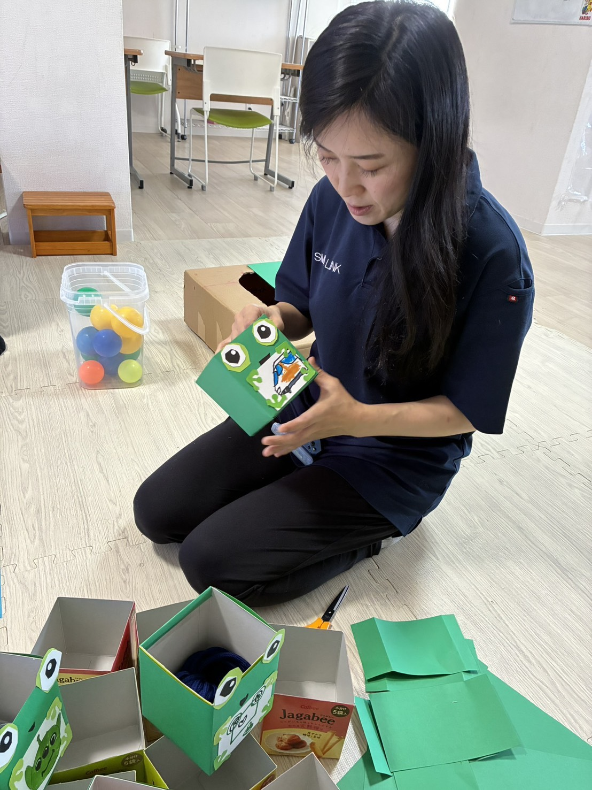
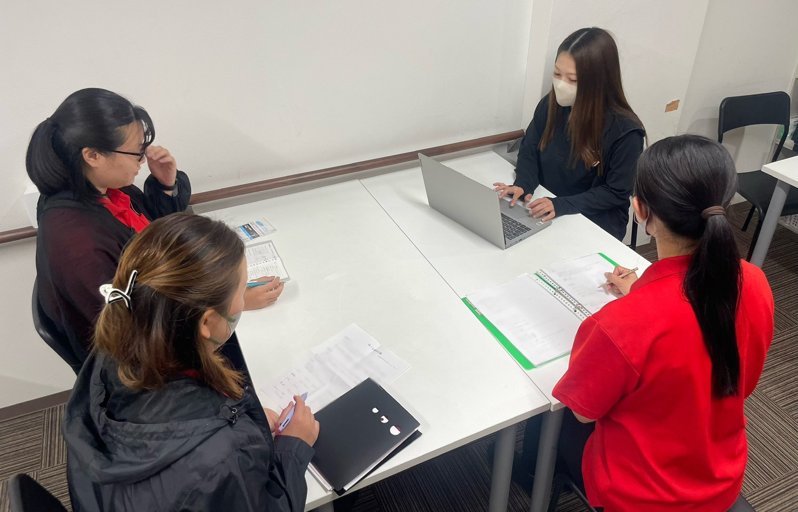
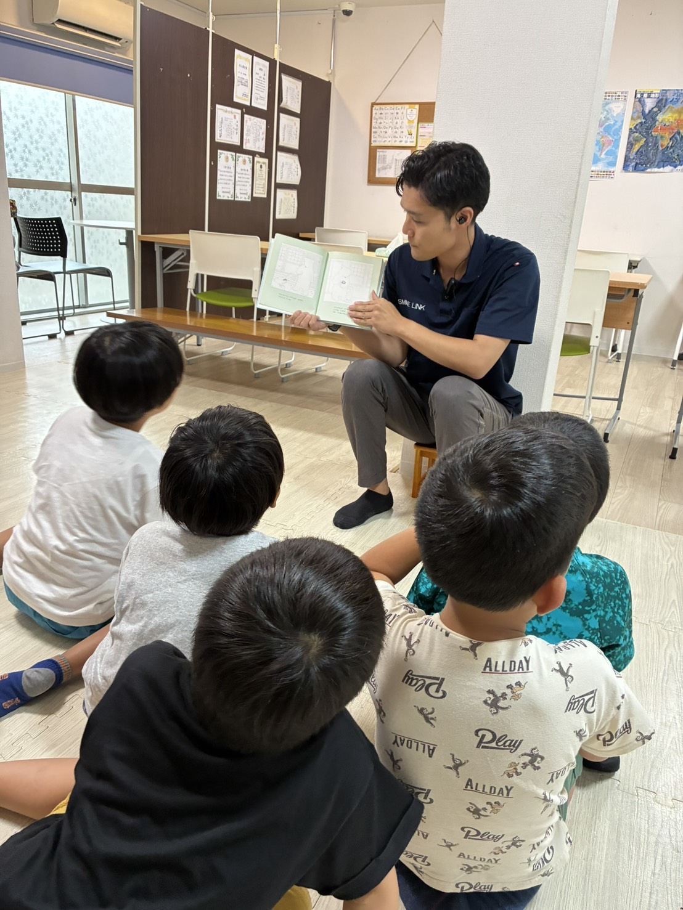

YOUR STORY あなたの経験
あなたの経験は、
ここで
誰かの力になる。
持っている資格や、これまでの経験から、おりーぶで活かせる仕事を探せます。項目を押すと、関係する募集職種に移動します。
OLIVE GROUP — RECRUITING SITE
GROW TOGETHER
誰かの成長を支えながら、
自分も一緒に成長していく。
ここで働く毎日は、ちょっと楽しい。
ABOUT おりーぶって、どんな場所？
ただ支援するだけじゃない。 一緒に悩んで、 一緒に成長する。
できないことを数えるのではなく、できることを一緒に増やしていく。うまくいかない日は、利用者さんと一緒に、スタッフ同士で一緒に悩む。それが、おりーぶの仕事のやり方です。


PURPOSE
兵庫県伊丹市・尼崎市で、子どもの療育から、働く場所、暮らす場所まで。
地域の中で、長く頼られる存在であり続けることを目指しています。
DAILY おりーぶの毎日
「できた！」の瞬間、みんなの笑い声、スタッフ同士の作戦会議。毎日は、思っているよりずっと人間くさくて、ちょっと楽しい。
仮写真に添えた短文は構成用の仮テキストです。スタッフへの聞き取りで差し替えてください。
MOVIE 動画で見るおりーぶ
事業所の雰囲気や、一緒に働くスタッフの声を短い動画にまとめました。タップすると音声つきで再生されます。
仮動画のタイトル・並び順は仮です。出演者の掲載同意を確認してください。
YOUR STORY あなたの経験
持っている資格や、これまでの経験から、おりーぶで活かせる仕事を探せます。項目を押すと、関係する募集職種に移動します。
ANOTHER PATH 異業種からの挑戦
就労支援 作業支援員（普通自動車免許が必要。AT限定可）
保留サポートスタッフ／送迎ドライバーの募集条件

前の仕事で
身につけたこと、
そのまま使えます。
FIND YOUR ROLE 適性の目安
4つの質問に答えると、あなたの強みと、向いていそうな役割が分かります。採用の合否とは関係なく、回答は保存・送信されません。
PEOPLE どんな人と働くの？
要差し替え氏名・入社年数・コメントは仮です。写真はイメージを含みます。撮影と掲載同意の取得後に差し替えてください。
VISION 仕事の先にある未来
一人ひとりに寄り添い、できることを増やし、自信と可能性を育て、より良い未来をつくる。
CHILD
就学前
はじめての「できた」を、一緒に見つける時期。
児童発達支援SCHOOL
学齢期
放課後の時間に、得意と自信を少しずつ育てる。
放課後等デイサービスWORK
働く
自分のペースで、働く力と役割をつくる。
就労継続支援B型LIFE
暮らす
地域の中で、安心して暮らし続ける。
グループホーム※現在運営している事業をもとに記載しています。対象年齢・事業範囲は要確認
VALUES おりーぶが大切にしていること
JOBS 募集職種
募集内容は求人一覧にもとづいています（2026年11月1日時点）。尼崎市・伊丹市のほかの事業所が勤務地になる場合もあります。保留の項目は確認中です。
子どもに関わる職種では、こども性暴力防止法（2026年12月25日施行予定）にもとづき、採用選考の過程で特定性犯罪の前科の有無を確認します。
FAQ 応募前の不安
決まっていないことは、決まっていないと書いています。
VISIT まず、見に来ませんか？
応募する前に、まず事業所の空気を見に来てください。話を聞くだけでも大丈夫です。
話し中の場合は折り返しご連絡します。保留見学の所要時間、電話の受付時間